UVA MakerGrounds Newsletter
April 2020
COVID-19 Updates
Much has changed since our inaugural newsletter came out two months ago in February.
The past newsletter noted many upcoming activities, which have obviously been cancelled or postponed. Most of the shops, labs, and spaces have switched from helping students to creating Personal Protective Equipment (PPE) for UVA medical staff and supporting the local community.
MakerGrounds PPE Efforts
This newsletter will feature some of the efforts that MakerGrounds and Charlottesville community members are participating in.
If you would like to join in the efforts to create PPE for the UVA and surrounding community, please visit
- https://masksforcville.com/3d-printing for 3D printing masks
- http://nhnmasks.net/ for sewing masks
And THANK YOU to all who are working on the front-lines and making PPE to protect those front-line workers!
Ear Protectors
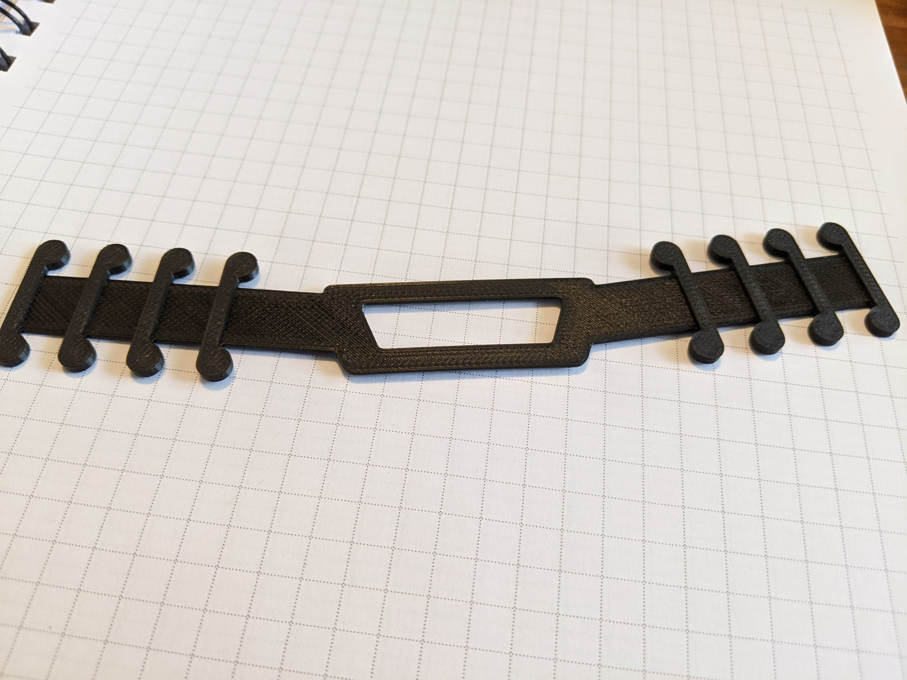As of April 13, 2020, MakerGrounds and the community have collected and distributed 1,928 straps going after a goal of 4,800 in total. And there are another 1,000 ready to be collected.
Project lead, Andrew Harris, encourages everyone to "Please continue sharing the site to have people join our effort, https://masksforcville.com/3d-printing"
Here's where these straps have gone:
- UVA: 1,117
- Martha Jefferson: 553
- Area Skilled Nurses: 258
Updates in materials and design will allow Sebring Smith to water jet these pieces at a much, much higher quantity, possibly cutting 10,000 in a day. A million pair of ears thank all of you who are making these ear protectors!
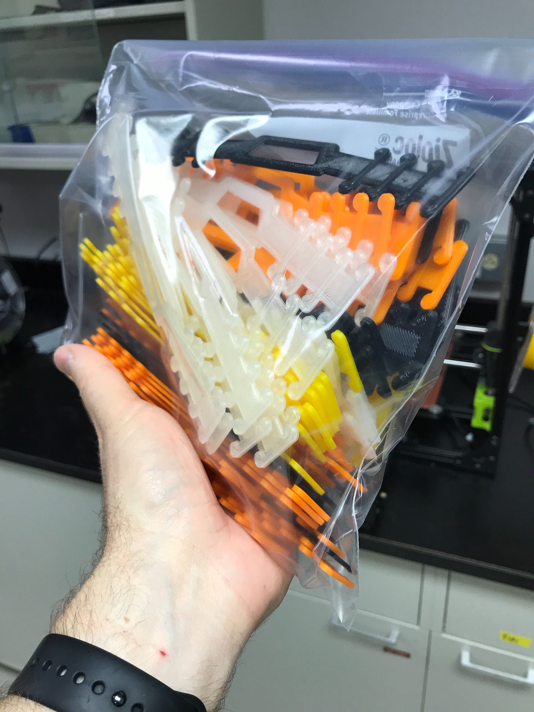 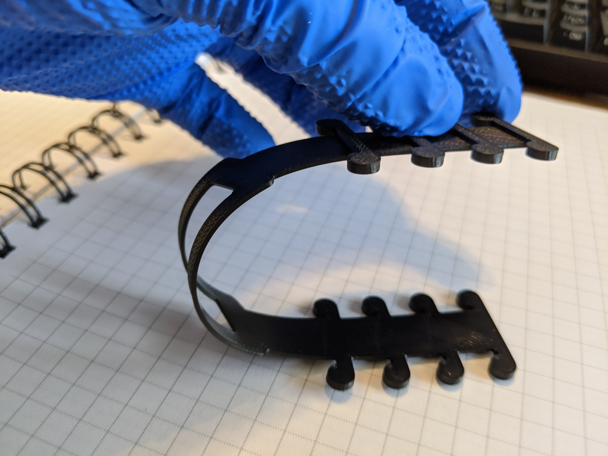 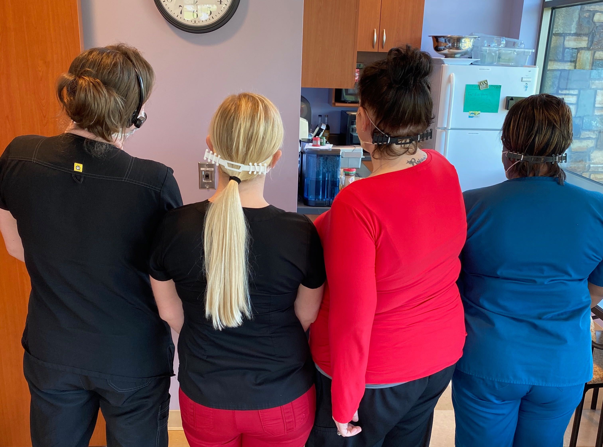
Face Shields
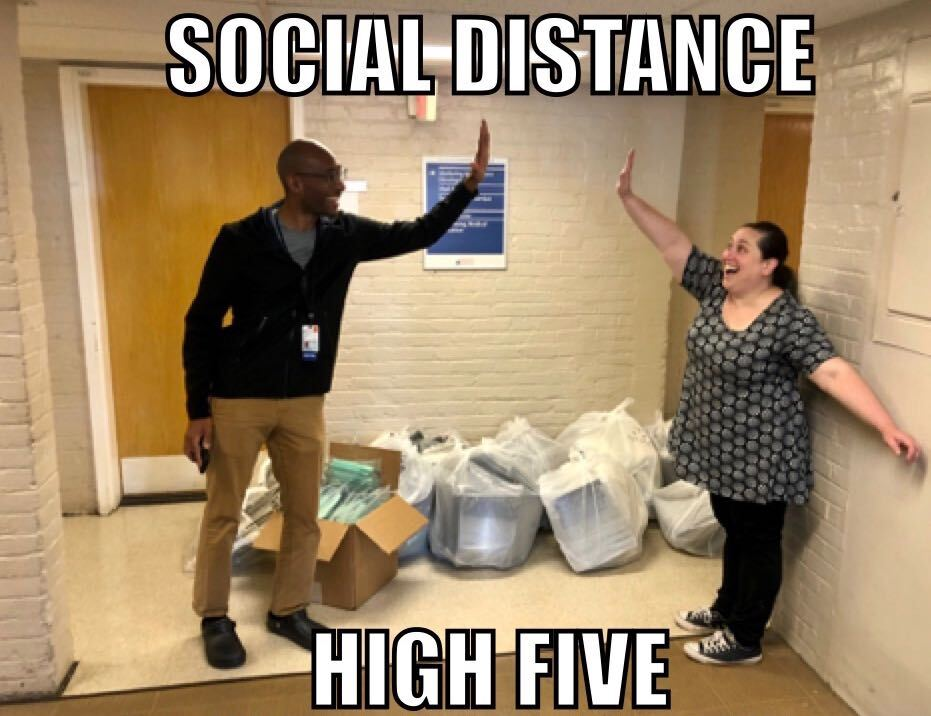On April 13, Melissa Goldman and the Face Shield Team delivered 1200 shields to UVA, and 550 shields to Martha Jefferson Hospital!
GREAT JOB, TEAM!
 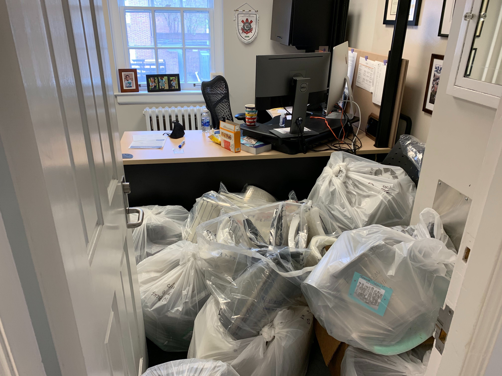
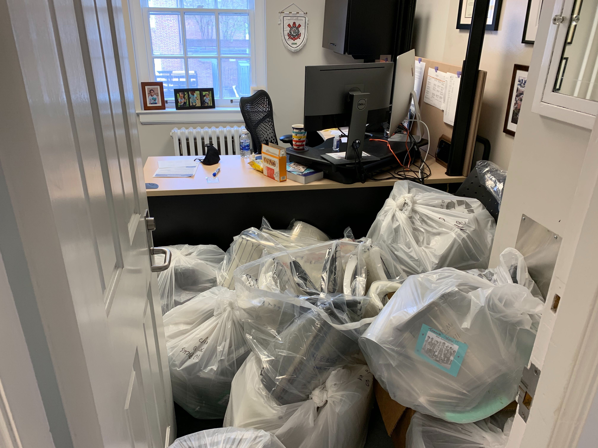
Camera Stands
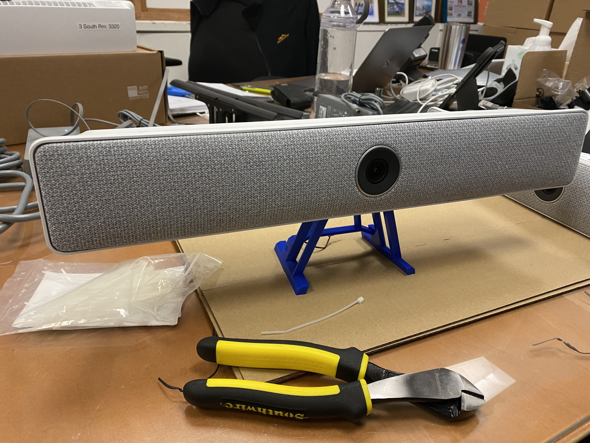UVA Hospital also reached out with a need for camera stands. These will be used to outfit rooms for patients in isolation to allow monitoring and communication back to the unit's nursing station as well as to specialists in infectious disease and epidemiology among others. While these items are not PPE themselves they are being deployed with the purpose of reducing the use of PPE by limiting the number of people, and frequency, of care providers physically entering the hot space of the patient rooms.
There is a need for 155 stands by the end of April. The design of the stands is currently under development to improve stability and decrease the material needed to print the stands. Stands will be printed by makers in the Charlottesville community. If you are interested in helping print the camera stands, send an email to Ammon Shepherd at ammon@virginia.edu
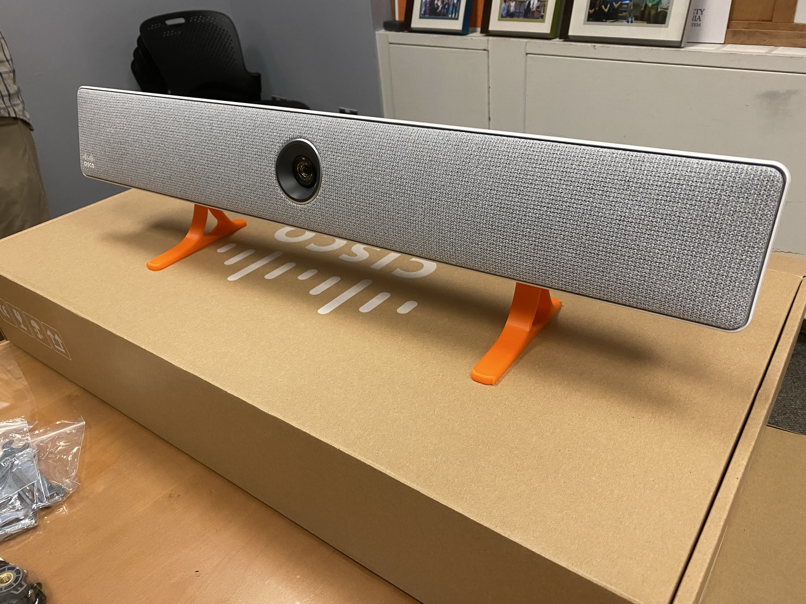
N95-like Masks

Project Lead, Gavin Garner, detailed the progress on the N95-like masks on Wednesday, April 8:
Here’s a quick summary of where we’ve come from over the past two and a half weeks and where we currently are in terms of this N95-like mask project...
Background: First, we need to clearly distinguish between “N95-like” disposable masks and reusable respirators and general face masks (including “simple masks” i.e. cloth masks). Research seems to suggest that real N95 masks should be used in situations where the virus could become aerosolized where it might be viable in the air for up to 3 hours, but this condition seems rare and probably only happens within certain parts of hospitals where patients with COVID 19 infections are being intubated or are using nebulizers or are undergoing pulmonary surgery. In these situations, the particles containing the virus can be extremely small. However, in most other situations such as someone coughing or sneezing, it seems a surgical mask or even a normal “simple mask” made out of cloth should keep people relatively safe. On top of that, maintaining at least six feet of social distancing should also help ensure that heavier droplet particles (e.g. emitted while someone is talking or coughing) would fall away before reaching you. Of course keeping one's distance isn't always an option for the healthcare workers that we are trying to help out here. The key to an effective N95 mask lies both in proper filtration and in proper fit.
Filtration: Obviously filtration is the whole point wearing an N95 mask. Submicron filtering does not work the way you might initially think, however, and it’s not really a matter of big particles being trapped as they try to squeeze through smaller spaces. There is an electrostatic charge effect that attracts tiny particles towards the filter fibers. Unfortunately, moisture quickly seems to degrade this process, and exhaled breath contains moisture. For this reason, the amount of surface area that the filter contains is an important consideration (e.g. a disposable N95 mask has around 14in^2 of filter area). Note that most of the 3D-printable masks online only have a single square inch or two of filter area and would therefore need to have their filters replaced quite often.
Fit: If a mask does not fit correctly and extremely tiny particles can simply bypass the filter to come in through the gaps between the mask and the face, then it won’t do much good against an aerosolized virus. Note that this doesn’t appear to be as big of a deal for larger droplets such as from a normal cough or sneeze, since they’d have to change direction a lot to slip in through a gap and would probably hit something along the way. Thus a simple mask should provide plenty of protection under normal circumstances. Yesterday, @John Wright helped us to “fit test” many different types of masks, some that we’ve designed ourselves and some promising ones that we’ve found online. After establishing a baseline sensitivity to the bitter agent, I started with a store-bought fabric simple mask, and it failed in just a few seconds, which was not unexpected. Joe Zhu (a research scientist in my department) tried a mask he’d been working on made mostly out of flexible TPU, but it failed due to leaks around the nose. I then tried the “Montana Mask” and it worked okay on me until the last round of the test (bending up and down). (Note that this mask design has two flaws in my opinion. First the filter is too small, and second the filter must be inserted from the inside clean part of the mask, which also means the dirty one must be removed that way.) We tried the Virginia V Mask with a flexible TPU face piece, and it failed immediately due to leaks in the TPU material (which may have been too thin). We also tried the V Mask with a face piece made from a modified version of the French Planete Maker 3D Mask V2 (from Thingiverse) and it seemed to pass the entire fit test. However, I was wearing it pretty tight against my face, which wouldn’t be comfortable for an extended period of time. At this point, we are starting to print the filter box assemblies, and Joe and I will continue to work on various face piece attachments. Our next step is to try to incorporate a molded (cast) silicone gasket piece around the lip of a 3D-printed face piece.

Production: Our Virginia V-Mask is designed around the unique capabilities of our fleet of Stratasys FDM printers, mainly their dissolvable support material that makes complex geometry trivial and their ability to print in ABS and ASA, which we can post process in an acetone vapor to make the parts more airtight. Unfortunately, this means that we cannot simply scale up production with the help of consumer-grade 3D printers that many here might have in their local homes or schools. Note that based on the research and experimentation I have done, I would caution against printing “N95” masks out of PLA and trying to pass them off as real N95 masks (even though they may look a lot like them). For most people in most situations (e.g. going to the grocery store or perhaps even working as a nurse in a low-risk part or the hospital), these PLA masks will probably work just fine, but I don’t think we should be putting these in high-risk parts of our hospitals. That said, so far the Montana Mask seems like a winner, and it seems thick enough to mitigate the porosity of being printed out of PLA. (You can find the STL files here https://3dprint.nih.gov/discover/3dpx-013506)
Next Steps: We now seem to have converged on what seems like a viable 3D-printable N95 respirator solution. After a bit more testing with different face pieces on different sizes and shapes of faces we will move on to mass producing a few dozen of these. However, in the meantime, I would like for this group to re-focus its attention on finding and making filters for official half-mask P100 respirators. The FDA makes it very clear that homemade substitutes should not be used when officially certified PPE is still available. I would think that we could find hundreds of these available from UVA Facilities Management, local painters, people’s garages, etc. if we look hard enough and ask the right people. Filters for them will be in short supply, however, so I think that we should re-focus our efforts on designing replacement filters for these off-the-shelf respirator masks.
Nasal Swabs
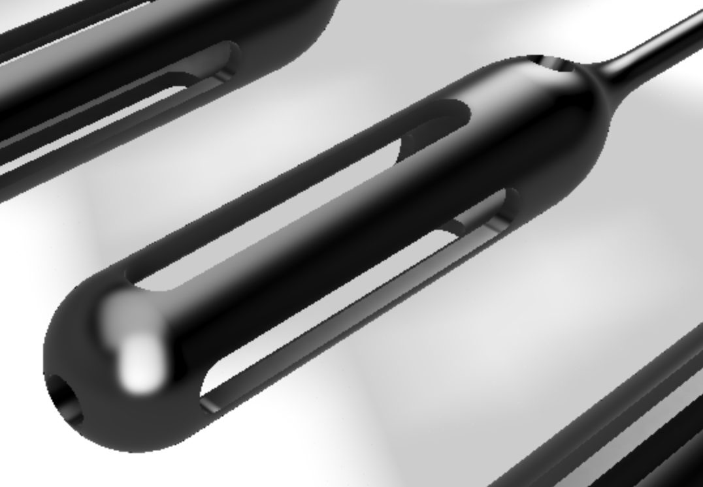One of the first projects taken on was to figure out if there’s any way we could produce some or all of a nasopharyngeal swab that’s needed for COVID testing. There’s a shortage of these.
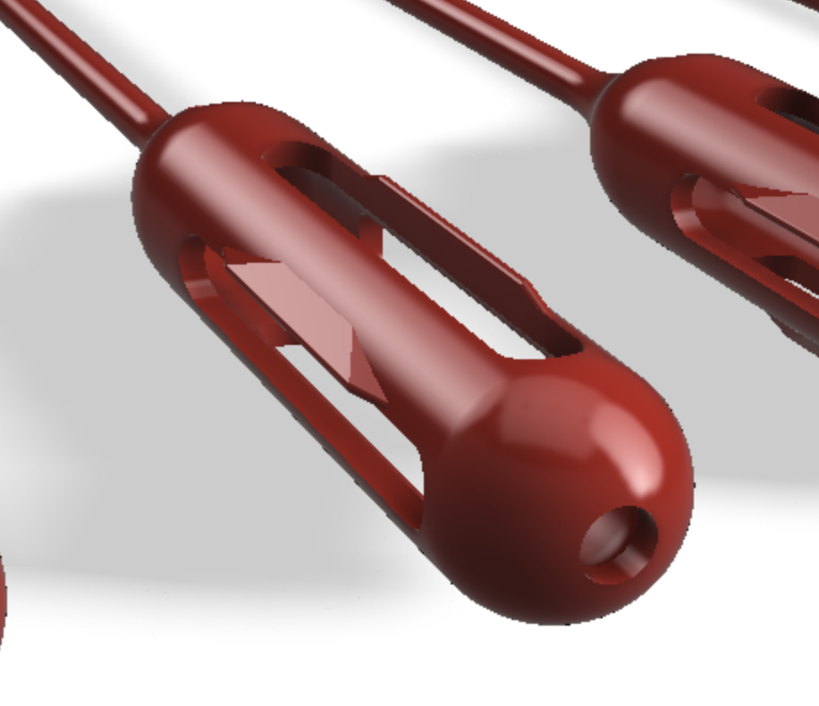Initial ideas were to use FDM and SLA printers to print out the swabs. It was quickly determined that FDM printers could not produce adequate quality or quantity of the swabs.
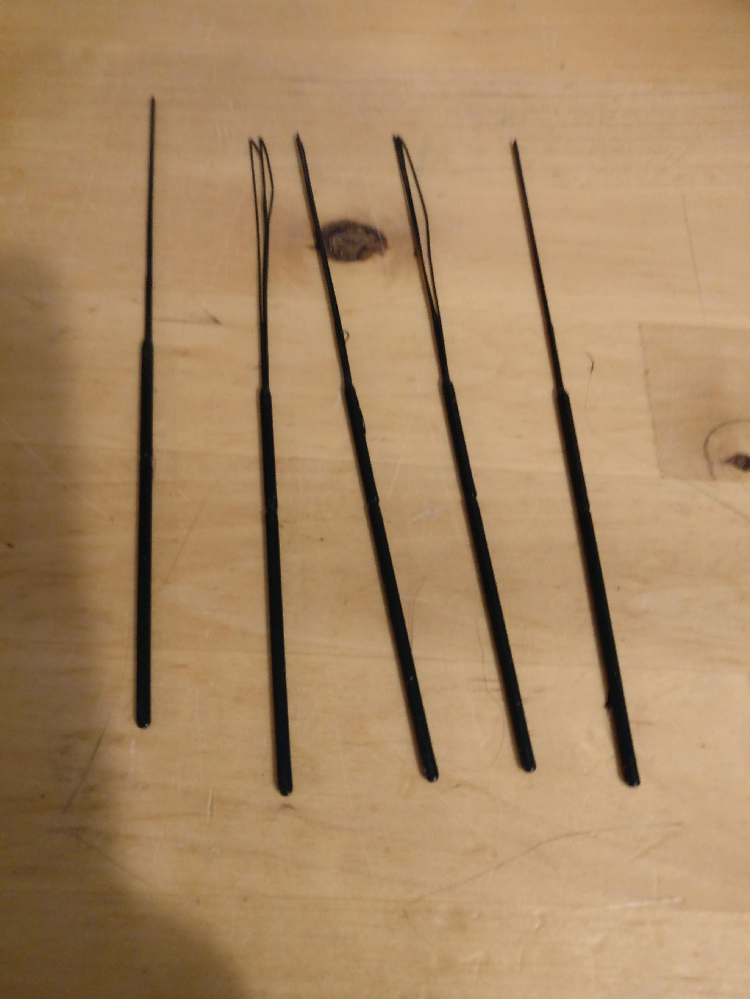SLA printers could produce large quantities at one time and sufficient quality.

Through the valiant efforts of William Guilford and Andy Homyk, a local company has been selected to manufacture the swabs using injection molding, and then sent to another manufacture to add the flocking on the tip of the swab.
THANK YOU!!
Finally, a big thank you to all of the medical professionals out there risking their lives to fight COVID-19.
Equal thanks to the many UVA staff, faculty, and students, community members, and others helping to produce PPE to keep our medical workers safe!
While not everyone in this list has actively particpated, this list represents the community of people willing and able to come together to help fight COVID-19 during this pandemic :
- Abbie Mills
Teacher at Woodberry Forest School - Alan Matsumoto
- Amanda Visconti
- Ammon Shepherd
- Amy Mathers, MD
- Amy Salerno
- Andrew Barros
Pulmonary and Critical Fellow, Data Scientist, Hobbyist - Andrew Harris
product management - Andy Homyk
- Bailey, Reid Reid
- Becca Kowalski
- Ben Doerr
- Benjamin Scire
- Bennett Irion, Allison
- Brandon Phan
- Brewster, Jason
- Casey Kerrigan
- Chaudhuri, Santanu
- Chris Jessee
- Chris Rybitski
- Chris Tyree
- Clayton
- Coke Matthews
- Dart, Dwight
- Dave Johnson
- Dave / Icarus Medical
Local company with access to 3D printing community - David Moody
- Dow, Peter
- Dr. Keri Hall
- Ebony Hilton
- Ed Schwab
- Elizabeth Thiel Mather
- Eric Bredder
Manufacturing @PVCC - Evan DaBreo
Resident Physician, former engineer - Gary Abramek
- Gaurav 'Gino' Giri
- Gavin Garner
Associate Professor of Mechanical & Aerospace Engineering - Melissa Goldman
Architecture FabLab Manager - Harrison Brookeman
VTCSOM, medic, engineer - Hessam
- Jason Bennett
- Jason Brewster
- Jeanita Richardson
- Jeff White
- Jenn Lobo
Assistant Professor of Public Health Sciences, operations researcher, hobby sewist - Jennifer Williams
- Jessica Denomme
Registered Nurse - Ji Ma
- Jo Watts
Design, Fabrication, and Supply Chain Management - John Wright
- Jon Bruneau
- Jonathan Rosen
- Joseph Carley
- Justin Watts
- Kate Smith
- Kathryn Mutter
- Kathryn laughon
- Keith Williams
- Trevor Kemp
SARC FabLab Assistant Manager - Kevin Seitter
- Kristy Davis
- Laura Duckworth
- Lewis, Lawrence Paul
- L Sisley
Paramedic DICO - Lindsay Ivey Burden
- Luis Felipe R. Murillo
- Luke Huelsenbeck
- Lynch, Clarissa (cl9ev)
- MASWANSO
- Margaret Sande
Emergency Med physician - Marianne Yencken
Certified Industrial Hygienist - Matt Shields
- Matthew Lim
- Matthew Trowbridge MD MPH
- Megan Rossomme
- Melissa Conner
- Michelle Whitlock
- Nancy Rosen
- Navarre
Cville Makes - Nelson Zambrana
- Nick Jones
- Nora Dale
- Oliver Daniel
- Osmond Wu
- Rebecca Steele
Clinical Nurse Leader - Rory Stolzenberg
- Ryan Sharkey
UVA Respiratory Therapist - Schmidt, Eric M
- Sebring
- Shane Lin
- Sharon Payne
- Sheila Stone
- Steva, Lewis F
- Taison Bell
Physician - Thomas Chumney
- Thomas Corey
- Tiffany Pillifant
- Tyo, Eric C.
- Victoria Valdes
Art Dept Makergrounds - Virginia Leavell
- Warner, Steven Lewis
- Whitney Lassiter
RN, Medical ICU - Will Guilford
Associate Professor of BME; Assistant Dean, Engineering - Wimer, David F
- Yi, Fang
- ibhimji
- willrourk